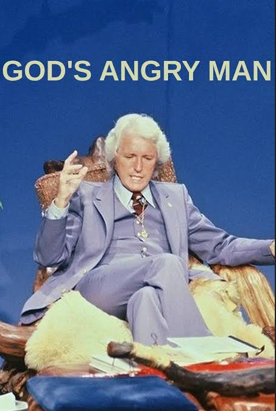

Werner Herzog
1981
48 minutes
TITLE: God's Angry Man TEXT PLACEHOLDER 080
This is a Werner Herzog short documentary about a sketchy televangelist. It is probably best known for the bizarre "clapping monkeys with cymbals" scene, which the televangelist used on his show to mock the government agencies who were after him for fraud for the large amounts of money he was collecting from his faithful flock.
You were around for some of the late wave of radio evangelists and televangelists at their worst. Back in the days before caller ID was ubiquitous, you used to call into their shows to prank and harass them during their frequent prayer drives, which gave you quite an adrenaline rush at the time. It felt righteous and dangerous and joyful to bother these crooks. You never would threaten anyone or even swear at them, but you had no qualms about claiming to be possessed by demons or being a demon or some other sort of divine being yourself.
Some of these early experiments warped your taste. You were delighted years later to encounter a pair of albums by a group who called themselves The Christal Methodists. The tracks on these albums were a combination of electronic remixes of televangelist clips over electronic beats, together with recordings of them harassing various televangelists and AM radio hosts on the air. These were interspersed with Negativland/Over the Edge style clips of their "fake" religious radio programming as they ranted about the importance of "the second circumcision" and other insane concepts while interacting with crazed members of the general public who would call in with their own hot takes.
When you first discovered this CD, it felt like you had found your people. You gave it heavy radio play.
Time to choose something different: